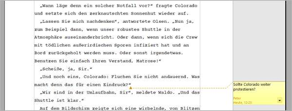
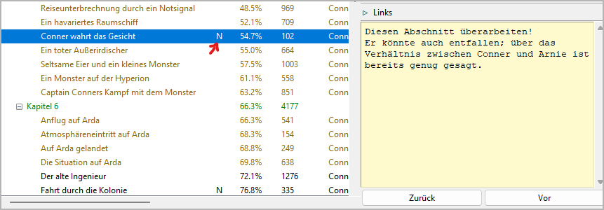
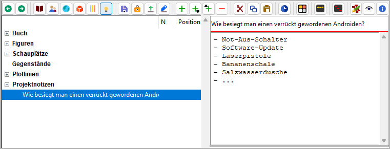

Notizen machen
Zur Organisation eines Schreibprojekts gehören auch Notizen. novelibre unterstützt das auf mehreren Ebenen. Die unterste Ebene ist der fortlaufende Text im Manuskript, dann kommen die Elemente des novelibre-Projektbaums, wie z.B. Kapitel, Abschnitte, Plotlinien und Figuren. Die oberste Ebene ist dann das Projekt selbst.
Kommentare im Manuskript
Während des Schreibens am Manuskript kann man mit Writer Kommentare in den laufenden Text einfügen, die dann bei entsprechender Einstellung als kleine farbige Textkästchen am rechten Rand erscheinen. Das ist sehr praktisch, beispielsweise für Platzhalter oder Merker.
novelibre übernimmt solche Kommentare beim Manuskriptimport, und zeigt sie im Textbetrachter farbig an.
„Haftmerker“ für einzelne Elemente
Bei der Organisation des Romans im Arbeitsbereich von novelibre arbeitet man mit den Elementen des Projektbaums. Die meisten von ihnen haben bei ihren Eigenschaften auch ein gelbes Texteingabefeld für Notizen. Enthält ein solches Feld Text, erscheint im Projektbaum ein „N“.
Über das Extras-Menü lassen sich die „Haftmerker“ in Listenform im Webbrowser anzeigen. Über die Download-Funktion des Webbrowsers hat man eine beschränkte Exportmöglichkeit.
Projektnotizen
Für Geistesblitze, allgemeine Rechercheergebnisse und Sonstiges bietet novelibre die eigene Kategorie der Projektnotizen an. Eine Projektnotiz ist im Projektbaum aufgelistet und besteht aus einem Karteikärtchen mit Titel und Inhalt, sowie einer optionalen Linksammlung.
Die Projektnotizen lassen sich auch in Listenform im Webbrowser anzeigen. Über die Download-Funktion des Webbrowsers hat man eine beschränkte Exportmöglichkeit.
Projekt-Wiki
Wem die Projektnotizen nicht genügen, der kann das Schreibprojekt mit Hilfe des nv_zim-Plugins mit einem Zim Desktop Wiki verbinden, das wesentlich umfangreichere Möglichkeiten bietet, von hierarchisch angelegten Seiten über To-Do-Listen bis hin zu einem Schreibtagebuch.
Tipp
Wiki-Seiten sind Textdateien, die sich mit den Projektbaumelementen, also auch mit den Projektnotizen verlinken lassen. Ist das nv_zim-Plugin installiert, erkennt novelibre, ob eine verlinkte Textdatei zu einem Zim-Wiki gehört, und öffnet eine solche Seite mit dem Zim-Anwendungsprogramm.